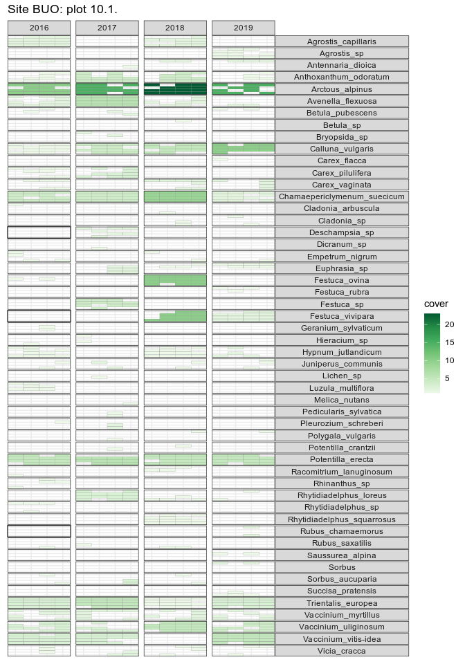

The goal of turfmapper is to plot species * time turf maps.
Installation
You can install turfmapper from GitHub with:
# install.packages("remotes")
remotes::install_github("Between-the-Fjords/turfmapper")Example
This is a basic example which shows you how to solve a common problem:
library(turfmapper)
library("tidyverse")
data(heath)
heath_long <- heath |>
pivot_longer(cols = matches("^freq\\d+$"),
names_to = "subturf",
values_to = "presence",
names_prefix = "freq",
names_transform = list(subturf = as.integer)) |>
filter(presence != "0")#only want presences
#set up subturf grid
grid <- make_grid(ncol = 4)This function will plot the data from one turf over time.
heath_long |>
filter(plot == "10.1.") |>
(\(x){
make_turf_plot(
data = x,
year = year, species = species, cover = cover, subturf = subturf,
title = glue::glue("Site {x$site}: plot {x$plot}"),
grid_long = grid)
})()
There are a few taxa than need checking here.
See the vignette for plotting multiple turfs.